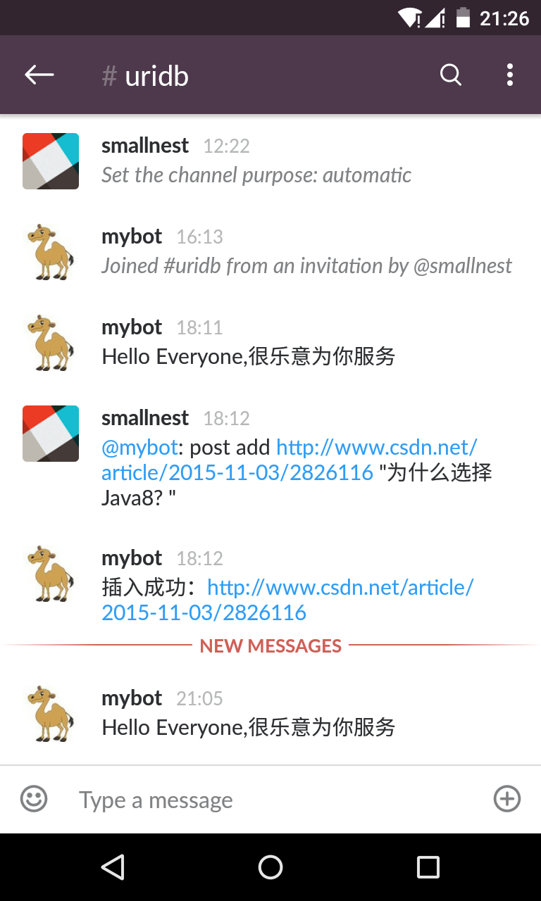

受湾区日报的自动化机器人启发：湾区日报的第一个“员工”：Slack/Hubot， 我决定为自己的 side project 写一个自动化的slack运维机器人。
uriDB技术流是一个搜集高质量技术文章的网站。主要是由爬虫到一些技术站点寻找关注度高的技术文章，以及一些技术聚合站点的高质量的文章，我也会发一些平常自己看到的技术文章。uriDB也允许用户注册发布文章。
因为这是自己的 side project, 我不会将精力全部放在这个项目上。 如果有一个机器人，可以方便的维护这个站点，那么可以极大减少我的工作量。
这个网站后台完全是由 Go 开发的，所以我还是想用Golang实现这个机器人，而没有采用hubot + hubot-slack。
目前这个机器人实现了基本的功能：
- 发表一个文章链接
- 修改文章的元数据
- 删除文章
- 分析一个文章链接
有时间我会将服务器性能监控等功能加上。
关于Slack
Slack创始人是Stewart Butterfield，他在2009年创立游戏制作商Tiny Speck，之后联合创立了图片分享网站Flickr。13年他开始转型做Slack，这款产品13年8月内测，14年2月公测。2014年4月，正式推出不到三个月，Slack就已融资4275万美元。2014年10月，融资1.2亿美元，估值达11.2亿美元，成为了有史以来发展最快的 SaaS 公司。
本质上，Slack是一个企业内部沟通协作平台。提供了 Web 端，IOS 端和 Android 端的访问。
我们公司先前用hipchat,被comcast收购后开始改用slack。
Slack提供了机器人的功能，而且提供了清晰简单的API接口，这一点在实时通讯工具中值得称赞。人们可以使用各种语言实现各种各样的机器人和插件。你可以查看Community-built Integrations，文章中列出了各种语言的插件和SDK。
我使用nlopes/slack来实现我的机器人。
第一步，你首先创建一个Team，并且加入到这个Team中。这是使用Slack的第一步。以后你可以直接访问http://
第二步，新建一个bot user integration。你需要为你的机器人起一个名字，比如我称我的机器人为 mybot。好像不支持中文，本来我想叫她"小冰"的。
可以为它指定头像，slack会为它生成一个 API Token。 这个API Token很重要， 以后访问slack API需要传入这个token。
slack提供乐意个简化的访问API的认证，你可以不使用oauth2的方式获取access token实现认证。而是直接获得api token访问API。
你也可以为你的普通登录用户生成full-access token，网址是: https://api.slack.com/web。
第三步，将你创建的bot加入到一个channel中。 比如我创建一个管理uridb网站的channel,将这个机器人邀请进来：

现在准备工作完成了。你可以在这个channel聊天了，但是这个机器人无动于衷，因为你还未实现它的逻辑。
使用 Go 实现这个机器人
创建一个 Go 项目， 并引入nlopes/slack:
1 | go get github.com/nlopes/slack |
这个库访问slack api超级简单， 如下面访问用户信息的代码：
1 | import ( |
因为我们要机器人实时接受指令，需要访问 Real Time Messaging API， 它是通过websocket实现。
1 | package main |
最重要的是 case *slack.MessageEvent:，这里会接收到实时的消息。 我们可以判断消息是否来自我们定制的channel，以及指令是否是对机器人发出的：
1 | ... |
剩下的逻辑就是你去实现 handleCommand，你可以实现各种各样的命令,如:
BTW:
增加了一个邪恶的功能，可以通过它远程执行linux命令，这样就可以运行命令查看服务器的状态，但是这个后门有点危险。


{kind=link}
{kind=link}